Introduction
Over the past couple weeks in class, I have had the privilege to work alongside my peer, Erica Hwang, where we learned and developed new skills within Electronics Prototyping. Whether it was learning, implementing, and executing the fundamentals of soldering and laser cutting, or refining my skills with 3D printing (more specifically with Prusa) and a computer-aided design (CAD) program, Fusion360, I can confidently say that I have learned a lot. From learning how to build and solder a robot, to designing a 3D print of a chassis enclosure, to then building another chassis using laser cutting, it has definitely been our most challenging project so far in this class. However, I really enjoyed the ins and outs of project 3.
Beginning Phases
The first step to this project was to get into pairs. This is when Erica and I decided that we wanted to work together. After we agreed that we would be an extremely efficient team, we were then presented with our unassembled robot. We were then provided with a circuit board to start practicing how to solder in an effective way. After a live step by step tutorial of how to solder done by Professor Roy, to Professor Rogers providing us with hands-on guidance, I learned how to execute the “hershey kiss” solder. The first step to this process was coating the soldering device in soldering iron to improve the heat transfer, prevent potential oxidation, and finally, to make sure the soldering process will be efficient and effective.
The next step was to take the soldering iron, put it on the metal parts of the circuit board, and make contact with the device to quickly solder these variables together. Once this was established, I had to quickly remove the device so I could allow the solder to cool, harden, and eventually, make a connection. For me, the most challenging part of this process was remembering to clean the soldering device each time I soldered something together!
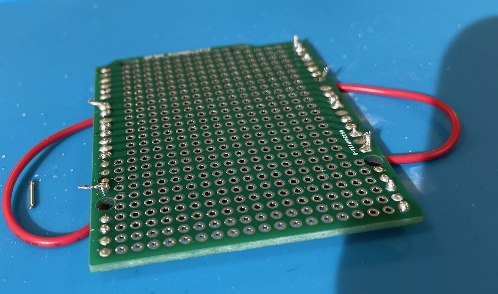Part 1: Assembling the Robot
It was now time to move on to the real thing: assembling our robot. The first step to this process was reading the
D2-5 Intelligent Tracking Car DIY Kit manual. Here, Erica and I were provided with what we needed to assemble, the features and different parts of the robot,
and finally, the instructions. However, one challenge we faced was identifying the correct Metal Film Resistors to their corresponding location, as the only way
to tell the difference was the color sequence. Thus, the one thing I would change in the manual is clearly articulating where each Metal Film Resistor goes (i.e.
the correct colors from left to right are…). After overcoming this obstacle, we then discussed that Erica would be the one acquiring and placing each part with the
corresponding location in the circuit board, and I would be the one soldering. After going through the manual and discussing the best tactics to make sure that the
assembly of the robot would be most efficient, it was time to start building the robot together!
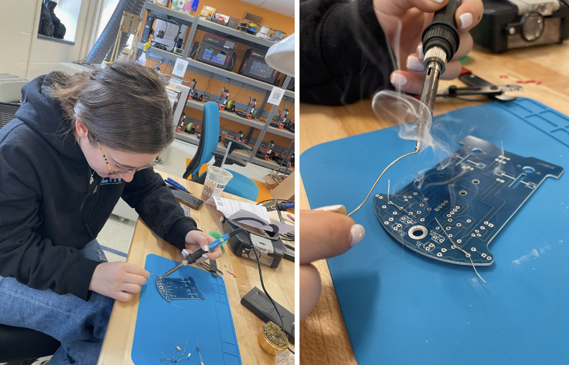
After soldering the first couple of steps, Erica and I uncovered our first problem: we should not have crossed the wires
of the metal film resistors. Why? This caused them to fuse together, as well as fusing them to the circuit board, which is one way to make the robot not function.
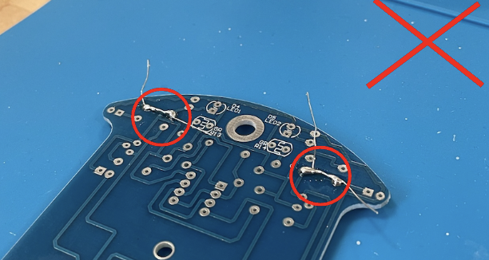
Once we realized this mistake, we asked Professor Rogers of the best way to proceed. He advised us that one of us should re-melt the iron using the soldering device and the other should use a new device that would suck up the extra iron. So, that is exactly what we did, and it worked!
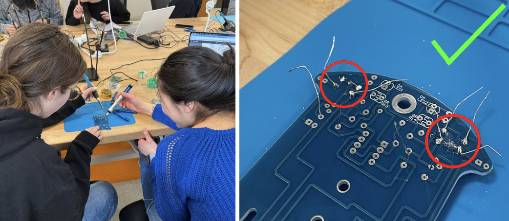After overcoming this difficulty, we sped through the rest of the instructions, added some googly eyes to the wheels to show
off our creativity, and boom, we were done assembling our robot! Once we turned on our robot car, we were relieved to see that it worked. We then decided to name our
new creation, Papa Wheelie!
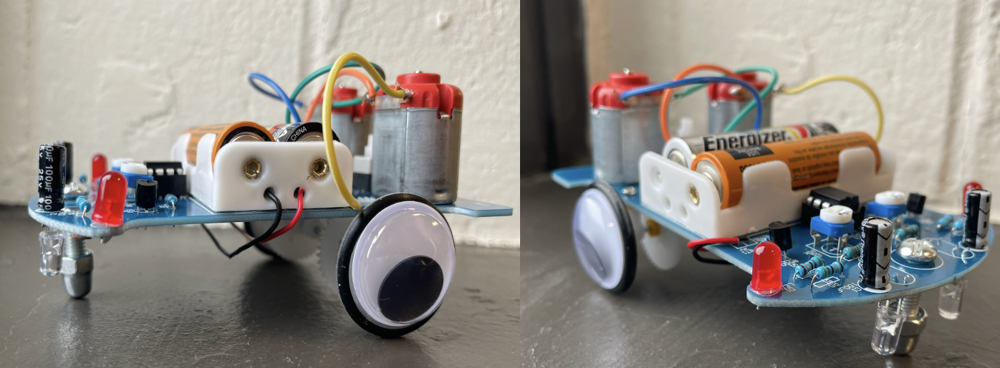
Part 2: Measuring the Dimensions of Papa Wheelie
This part of the project was probably the quickest, as measuring the dimensions of our robot car was extremely easy when using the caliper.
To make sure that Erica and I were very accurate when measuring, we decided to take turns measuring each part of Papa Wheelie. Thus, we created an entire document of our lab note dimensions.
To be able to tell what specific region correlates to the measurements, I will also present a visual diagram.
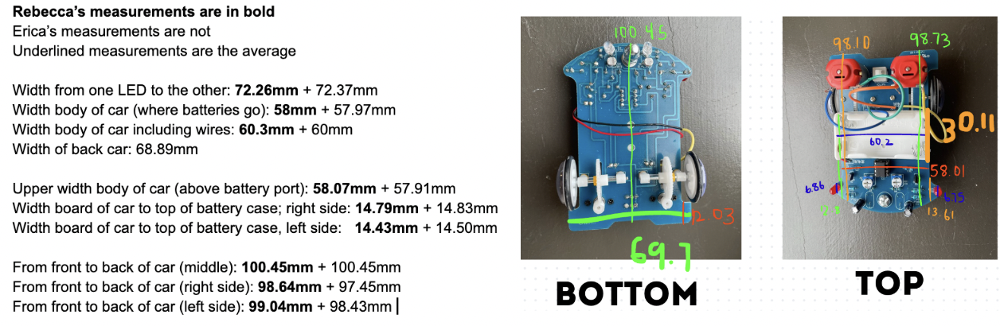
For this photo of lab notes, please note that we decided to average out our two measurements. That is why you will only see one measurement for each specified region.
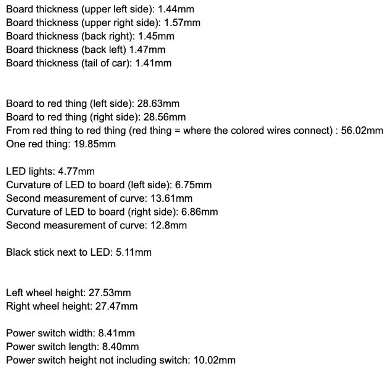
Part 3: Designing and 3D Print of the Chassis Enclosure
The next step to this assignment was to create a chassis enclosure for Papa Wheelie. However, before printing anything out, we had to follow these simple guidelines of what the final product should be: allow room for wheels to move, senors must see the ground, LED lights should be visible, access to change the batteries, and a place to switch on and off the power button. In order to design this enclosure, we first started out sketching a prototype of the vision we wanted to replicate on the robot car. From here, we decided that this box would suffice as our first prototype for the final product for the chassis enclosure. Thus, we decided to upload this design as an .stl file onto PrusaSlicer.
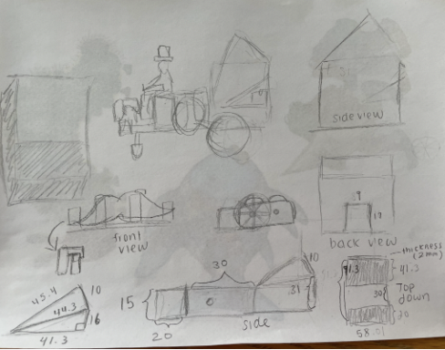After developing a sketch of our prototype, it was time to start using the famous CAD program, Fusion360 in order to create our vision. In order to become familiar with creating a chassis within Fusion360, we first had to watch a tutorial video entitled “How to design a box in Fusion 360 for Beginners!”. This tutorial was extremely helpful, as we learned the proper tools, shortcuts, extruding, and many more useful items within Fusion360 to make a box.
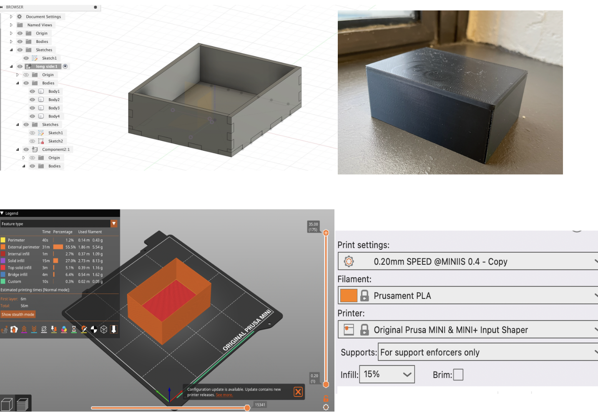After this, Erica and I decided to add shapes and designs from our first prototype to the next. In addition, we wanted to make sure that we followed the simple guidelines that were mentioned previously. Thus, we made our second prototype within Fusion360, uploaded it into PrusaSlicer with the same settings used for the last print, and printed it!
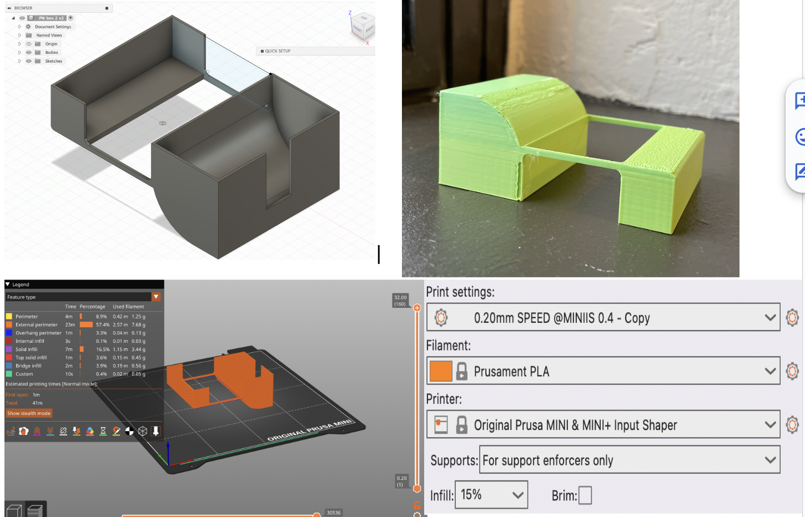The last print we decided to indulge was using the same exact template as the last box, but we wanted to add little poles in order to attach a wheel for the aesthetics of the chassis enclosure. Once again, in regards to the print settings we used on PrusaSlicer, they were the exact same.
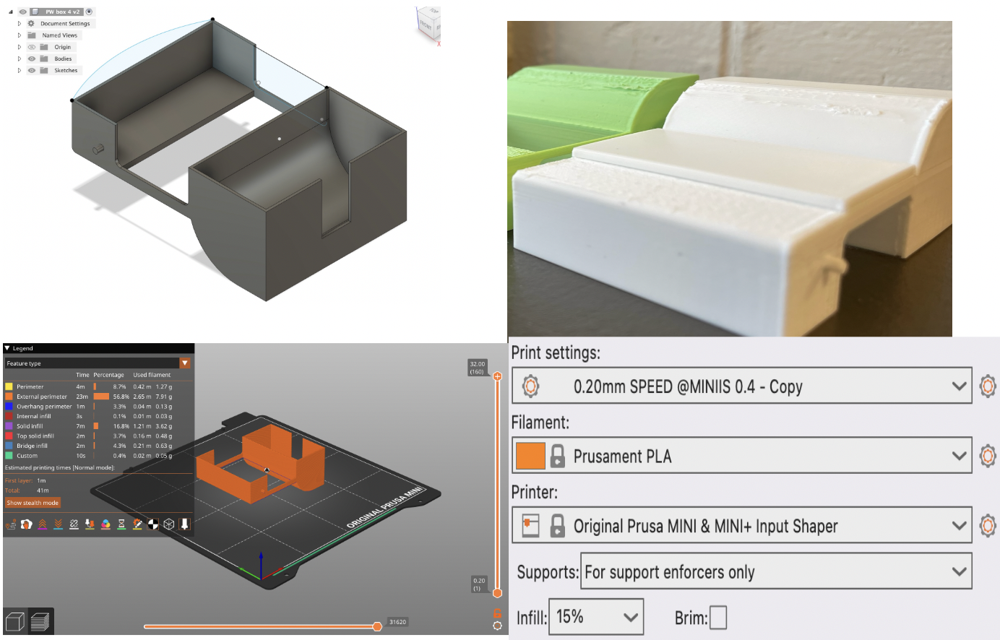Part 4: Designing and Laser Cutting of the Chassis Enclosure
The last step of this project was to create another chassis enclosure, but instead of using a 3D printer, it was finally time to start laser cutting with wood. With that being said, it was time to go back to Fusion360 to create a “finger-locking” joint box, while still following the guidelines that were previously stated. Thus, this is our first iteration of the chassis enclosure. Finally, for each laser box cut we did for part 4, in order to be able to make our vision a reality, all we had to do was export each design as a .DXF sketch and import the design into the application entitled “Light Burn”.

Immediately after the laser cutting process, we were able to tell that we didn’t scale our print large enough. Thus, we decided to go back to Fusion360 to scale our box to be bigger, as well as following the previously stated guidelines. At this point, we had been working on this project for the past couple of weeks, thus, when we got to this point of the project, making alterations was not a big deal, and we were able to do this quite efficiently. However, in regards to the challenges, one challenge that we faced was super gluing the pieces of the box together. I think it would have been beneficial to have some sort of device that would make the drying process quicker, as there were many times the box fell apart due to putting enough pressure to each side. Although this was a challenge, after my personal experience with laser cutting and 3D printing, I can confidently say that the process of laser cutting is more simple and comprehensible than 3D printing!
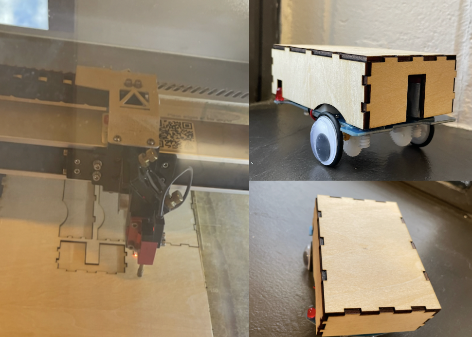Conclusion
After this project, I can definitely say that I am very happy with the outcome. I had a great time learning how to assemble a robot, solder, how to make my own design on fusion360, and most importantly, I am beyond happy to say I know how to use a laser cutting machine! I am beyond proud of myself that I got this project done!